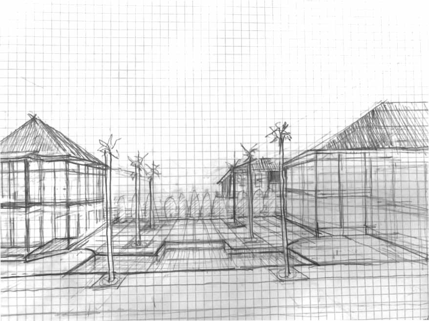

Architecture Ethnography
What does productivity mean to architects?
Files
Intro
A room filled with almost no sound except the gentle hum of the air conditioner, the tracing of pencils on paper, and an exacto knife cutting through cardboard, we had just entered the Kennesaw State University architecture building. Our small group of ethnographers had come to this building to study the tools that architecture students use and how those tools affected their productivity. We planned to interview architecture students to gain some knowledge on the tools and skills they needed to be successful and also to observe them using these tools. However, we quickly learned that our ideas were not as straightforward when put into practice.
“I couldn't do it. I couldn't do my work without it.”
-- Professional Interviewee
About
This project was deisgned to do an ethnographic study of what productivity means to architects and how it affects thier workflow. We created this to find out if new tools
have made the jobs easier and have the new tools and methods replaced the tried and true methods of the past.
My roll in this was to be the project lead and designer to guide our team through the process of creating an ethnographic report using in field observations and interviews. We acompolished this project by conducting two observations of architect students on campus and doing follow up interviews with them to compare the data. to better undertand the results we took this information and compared it to a professional interview we conducted.
Hypothosis
Tools of productivity dramatically improve the workflow of architects, and they will try to use the tools instead of older methods.
Process
We used the readings from Sam Ladners book A practical guide to ethnogrophy and used it plan our approch for the interview and obsrvation. we choose to go with a friendly approch that the book spoke of and went to the architect studio space with the goal to be smiling and carismatic when conversing with people. this process worked well and we were able to quickly book two people for interviews and observations.
We did our observations with two of us taking notes while the other tried to stay in the moment as much as possible. This method allowed us to get three points of view of what happened while also having one person as a backup for any important details that the note takers might have missed. this combined with some field photos helped paint a good photo for us to work from.
For the interview I took the lead asking questions while my two team members took notes and helped guide me when the conversations drifted too far. this allowed for me to stay in the moment and have a very friendly interview while still getting good information and not making the interviewee uncomfortable. we followed up the two student interviews with a single professional interview that we were introduced to through friends. this helped have a different point of view when anaylizing the data and allowed us to compare the student world to the real world.
“My biggest thing is emphasizing that you need sketching and digital programs, you need both... You need to sketch it out and get your idea on paper, and then you can transfer to a digital software. You have to follow the design process and throw away the bad ideas, then put in in the computer.”
-- Interviewee
Results
Our hypothesis can be broken down into two parts, one proven right, and one wrong. Firstly, we hypothesized that tools of productivity (rendering and design software, physical tools such as laser cutters, etc.) dramatically improve the workflow of architects. This was confirmed as we saw students complete weeks worth of work in less than an hour. Second, we assumed that with the introduction of technology to the field, architects would be moving away from older methods of architecture such as using sketches or handmade models. This was quickly proven wrong through our observations and interviews. While some architects did admit to favor either sketch or software more, we were hard pressed to find one that did not value the fundamental skills used in typical methods of architecture. To be successful, sketches and digital tools have to be used together; sketching has its place in drafting and quick ideas, where as digital tools provide accuracy and a way to quickly make small changes.
At this point we revised our persona to fit the mold of the students and professionals we had interacted with throughout this process. Our revised persona is Victoria Lance, a 4th year architect student at Kennesaw State. She enjoys art and chose architecture as her major so that she can continue that passion while forging a career. She doesn’t mind learning how to use design software and thinks it is helpful for her work and speed. But, she understands how important sketching and hand work can be, and makes sure to use a process including both physical and digital so that she can accomplish all her goals.
We discovered that being an architect is all about being well balanced in each trait. There is a need to be able to draw and having that freedom and creativity is still important; but, the integration of software and technology has completely changed the field and expectations. Tools like printers and cutters allow difficult, complex projects to be completed in a fraction of the time and with much more accuracy, while less artistically inclined architects can still survive in the field by compensating with good software skills. It's hard for new architects to imagine being able to complete much of their work without all of the tools and technology they've grown used to using because they see that as a part of architecture. Professionals still recognize how important the basic skills of hand drawing and sketching are to the field, and many lean toward those methods because they are so fundamental to architecture as a whole.
Our interviewees reminded us of a point of diminishing return, in which simple projects were quicker and easier to complete on paper than with the overwhelming amount of software options. During the interviews, there was brief mention of the possibility for architects to succeed without much drawing skill since the introduction of software to the field. We did not encounter a single student who felt that drawing and hand cutting were unimportant; clearly, hand-work held its place during the design process, particularly for simpler projects.
Strictly talking about productivity, most seem to agree that software and productivity tools are vital for keeping up with the demands of today’s clients, so long as what is being asked of them to digitally create does not exceed their knowledge of the software they are using. The learning curve of a program and complexity of a project is what really seems to affect whether architects, both students and professionals, think productivity tools help or hinder their productivity. It became clear during our observations that most designs consisting of complex shapes and forms would take days, or weeks, to complete with hand tools. Despite the annoyance of the learning curve most interviewees seemed to focus on, their reliance on productivity tools was obvious.
Our study revealed that “productivity tools” meant using everything at one’s disposal, be it sketching, modeling, software, or laser cutters, to complete a design with as much quality, and in as little time, as possible. The hand skills that laid the foundation for architecture today are utilized and supplemented by the new technology constantly introduced into the field, each one growing in its usefulness and necessity. To limit oneself to strictly use one modality is to limit one’s success in the field. A successful student demonstrates confidence in utilizing their skills in both sketching and productivity tools.They’ve built an unshakable foundation of abilities at the ready for whatever they may encounter. And if anyone can appreciate a strong foundation, it’s an architect.

Parker Bomar - 2018